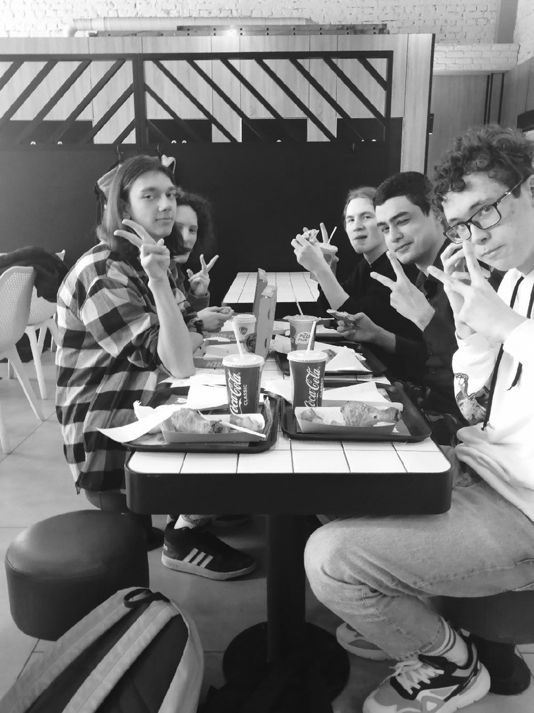
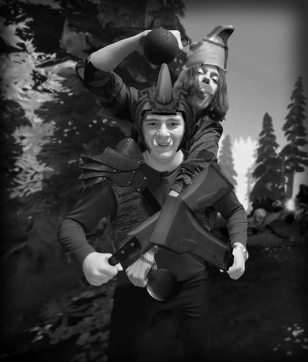
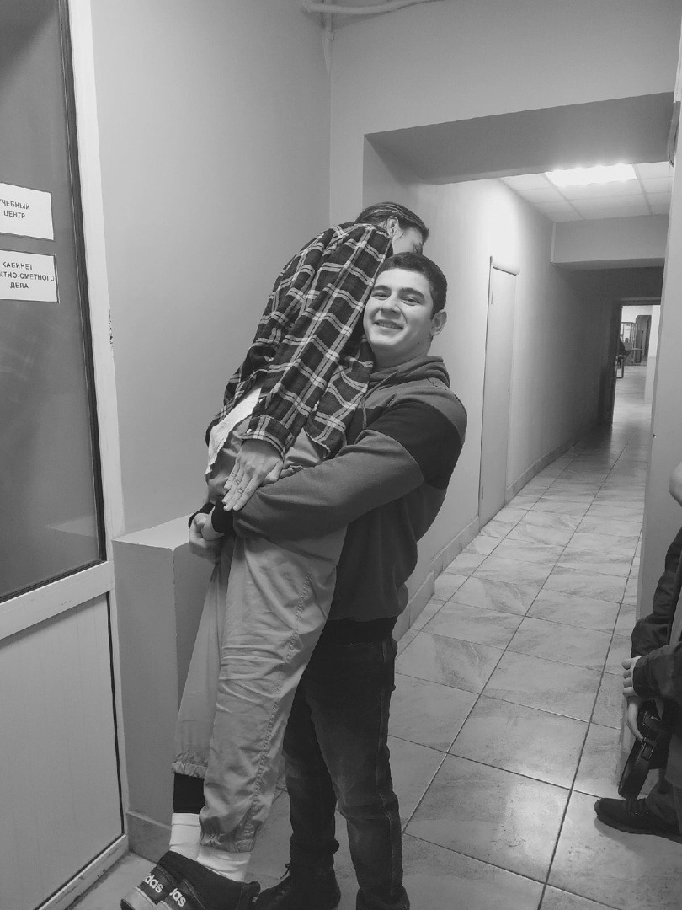
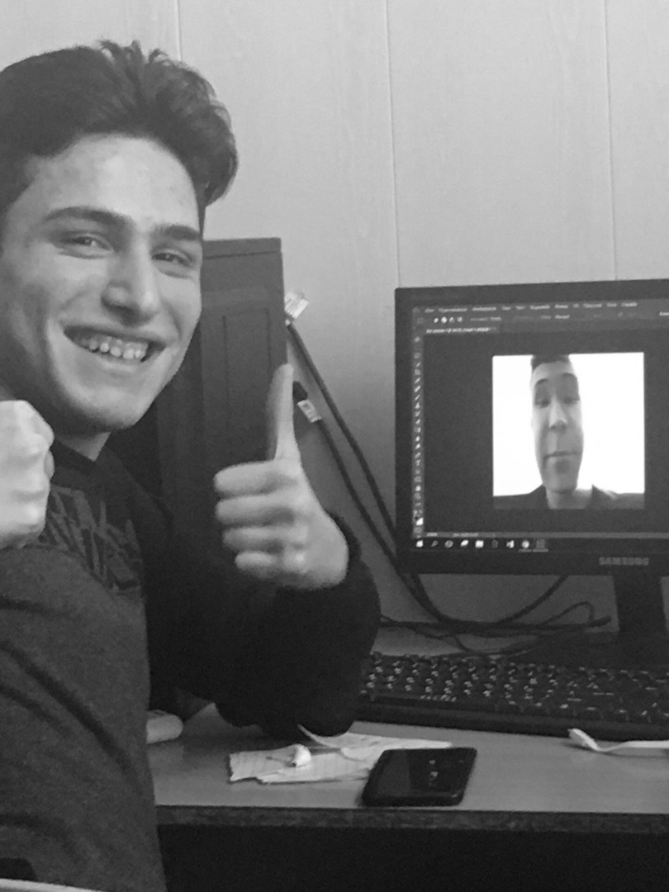

Студенты дистанта
Лучшая группа ПО-316
Наша группа, Шестнадцатые ПО-шки, существует уже третий год. И одним из самых запоминающихся моментов за это время стала дистанционка. то-то считал это лучшим периодом ведь в эти моменты мы не ходили на пары, а лишь подключались на пары в зуме и отключали микрофоны параллельно делая свои дела или во все играли в игры. Почти весь второй курс и половину первого мы провели на дистанте. Случилось это в связи с распространением вируса COVID-19. Каждый день мы смотрели количество заболевших и гадали закроют ли нас на дистант? Ведь правда, лучше проводить время дома в теплоте и уюте, чем ехать на пары в дождь или в мороз. Конечно на дистанте были и веселые моменты
 

Anonymous 1
Было много всяких моментов. Помню когда во время онлайн-пары парни забывали выключать микрофоны и из их уст могли послышаться такие слова, которые лучше не слышать...
Anonymous 2
Во время онлайн-экзамена у Гузачева больше половины группы просто не было. И из-за того, что наш «Хороший» сайт Дигеду как всегда был недоступен, он поставил всем автоматы. Да-да, даже тем ребятам, которые и не знали про этот экзамен. Учеба в колледже проходит неплохо, если там не учиться. Но если без шуток, то в колледже есть моменты, когда просто не хочется выполнять очередные методички и вечные лабораторные. Конечно есть исключение, когда работы делать интересно, но все же в большинстве случаев это рутинное занятие.
Anonymous 3
Мы сдавали наши работы на почту, в различные соц.сети и т.п. И наши парни скидывали свои работы не указывая свои настоящие имена. Такой случай произошел с Клепиковой, нашей кураторшой. Ей в позднее время на почту приходит письмо от Нарека-Скалы. Ее молодой человек вообще тогда не оценил этого.
Anonymous 2
Не редко были ситуации, когда на пары в зум приходил всего 1 человек. Тем более если эта пара стояла первая по расписанию.
Anonymous 3
Еще есть очень интересный предмет – БЖД, который ведет Шафорост. Он не только обучает нас собирать и разбираться автоматы, надевать костюмы хим.защиты, но и помогает отвлечься от других более сложных пар

Очень расстраивает тот факт, что в нашем колледже крайне мало пар английского языка. Все мы понимаем, что для нашей профессии он необходим! А все что мы имеем это 2 пары в 2 недели. Нам очень нравится английский язык!